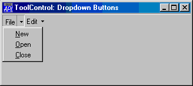

| Applies To: | ColorButton | ToolControl |
Description
The ShowDropDown property specifies whether or not a drop-down menu symbol is drawn in a ColorButton or alongside ToolButton objects which have Style'DropDown'.
ShowDropDown is a single number with the value 0 (drop-downs captions are not shown) or 1 (drop-downs are shown); the default is 1.
ShowDropDown also affects the behaviour of ToolButton objects which have Style 'DropDown'.
If the ShowDropDown property of the parent ToolControl is 0, clicking the ToolButton causes the popup menu to appear. In this case, the ToolButton itself does not itself generate a Select event; you must rely on the user selecting a MenuItem to specify a particular action.
If the ShowDropDown property of the parent ToolControl is 1, clicking the dropdown button causes the popup menu to appear; clicking the ToolButton itself generates a Select event, but does not display the popup menu.
The following picture illustrates a ToolControl with ShowDropDown set to 1.
